复杂业务的可视化与大屏设计
这一页汇集了我在运行监控、调度指挥与风险预警场景中的可视化实践。项目虽来自不同业务领域，但面对的是相似的问题：如何在有限的屏幕空间内组织高密度信息，让使用者快速理解全局、定位异常，并进一步进入具体对象与任务。不同项目中的职责范围有所差异，主要涉及信息架构、界面与视觉设计、设计规范及研发交付。

大唐集团内蒙古分公司生产运营中心
面向超宽指挥屏，集中呈现生产总览、区域运行、设备状态与重点指标。
以“总览—区域—设备—指标”建立阅读层级，让跨区域生产态势能够持续监控和快速下钻。

大唐集团内蒙古分公司生产运营中心
面向超宽指挥屏，集中呈现生产总览、区域运行、设备状态与重点指标。
以“总览—区域—设备—指标”建立阅读层级，让跨区域生产态势能够持续监控和快速下钻。
电网规模专题
围绕电网区域分布、规模负荷、运行趋势与重点事件，呈现全国态势与重点区域。
以区域和网络关系为主线，将规模指标、运行趋势与重点事件组织成可逐层阅读的专题视图。

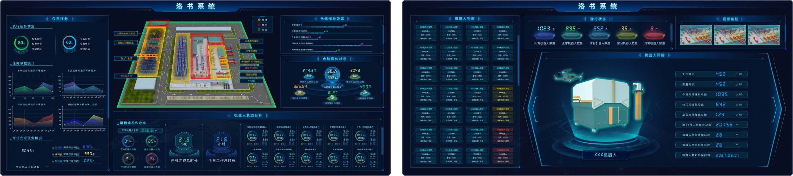
洛书系统
整合区域布局、设备状态、分析结果与运行趋势，用于持续查看设备运行和异常变化。
用空间布局定位设备，以状态和趋势解释变化，使总览与单体设备信息相互衔接。
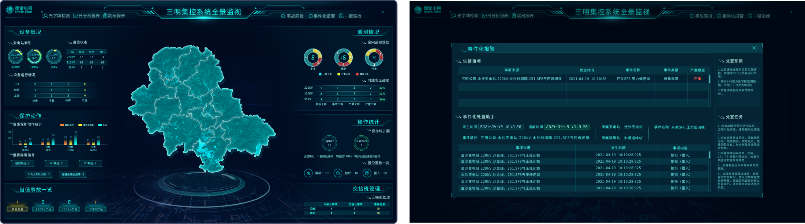
三明集控系统全景监视
以区域地图呈现监视对象的空间分布，并通过结构化清单承接对象查询与状态核对。
地图负责全景定位，清单负责对象核查，让区域态势与具体设备状态能够快速对应。

三维综合监控大屏
以矿区三维场景为核心，联动车辆路线、设备状态、安全趋势与告警信息。
三维场景承担空间定位，状态面板补充对象信息，使全局态势与异常位置能够直接对应。
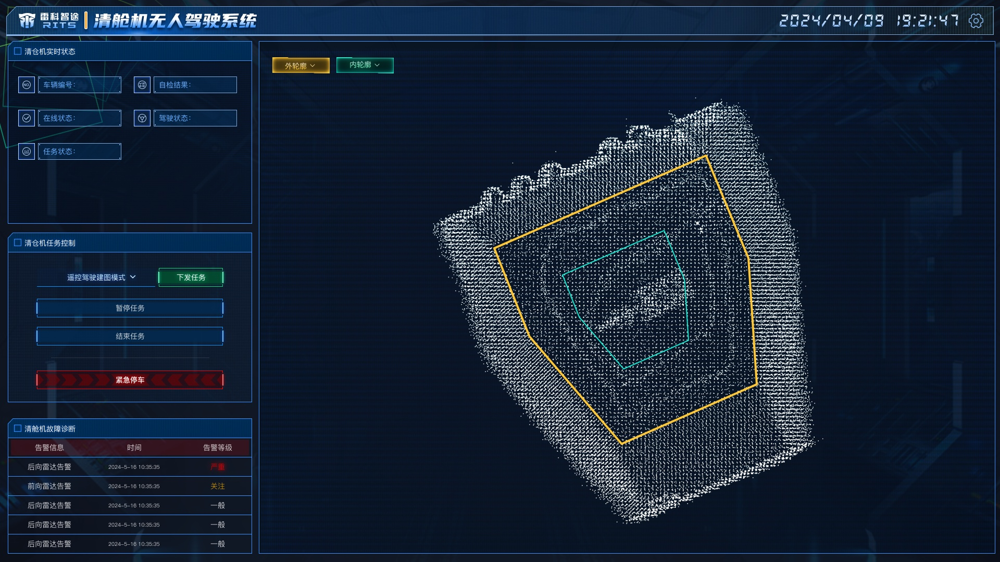
清舱机无人驾驶系统
围绕清舱作业过程，集中呈现点云环境、任务路径、实时画面、设备状态与异常反馈。
以作业区域和点云环境为主视图，将监控、任务控制与异常反馈放在同一操作链路中。


智慧矿山综合监控大屏
以矿区空间场景连接车辆、路线与调度状态，并结合任务信息和运行指标支持持续监控。
将道路、车辆与任务建立空间关联，辅以状态清单和趋势指标支撑日常监控。
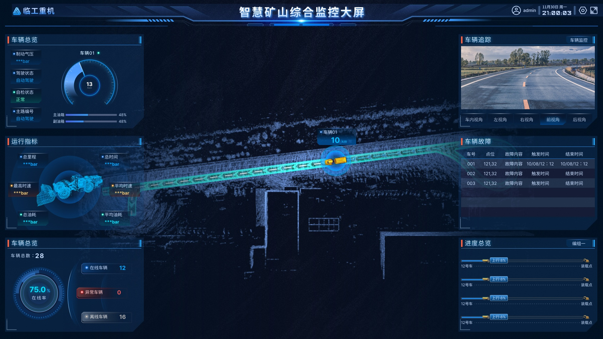

深部矿体车铲无人协同管控平台
围绕车铲协同作业过程，呈现设备状态、路径节点、调度命令、运行统计与告警信息。
地图承载车辆与路径关系，任务和车辆管理补足调度链路，让实时状态与历史过程相互验证。

任务调度
查看任务、对象与当前执行状态。

轨迹回放
结合时间与空间关系复核运行过程。

车辆管理
沉淀车辆信息、运行记录与管理入口。
车辆风控数据大屏
以全国车辆分布为主视图，结合车辆画像、风险等级、异常事件与趋势指标。
先用地图定位重点区域，再以车辆画像和风险指标进入具体对象，缩短风险排查路径。
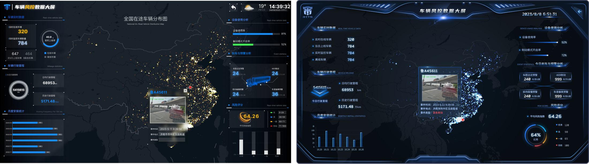
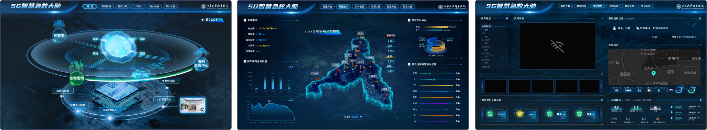
5G急救大脑
汇集急救资源、区域态势、设备状态与救治数据，形成相互衔接的大屏体系。
总览先呈现资源和区域变化，再通过地图与设备监控进入具体对象和任务。
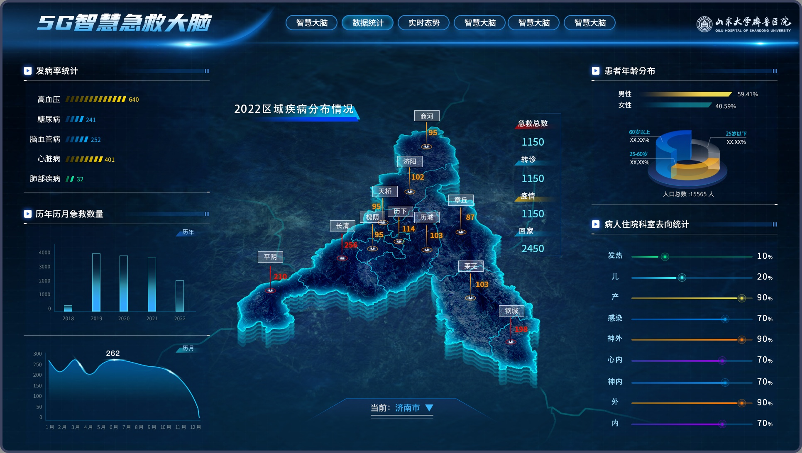
5G急救大脑 · 区域态势
以地图组织区域救护资源、患者分布、历史趋势与设备状态。
地图作为区域态势主视图，趋势和设备信息用于解释变化并定位具体资源。

5G智能急救事件预测分析图
通过区域热力、事件分布与时间变化呈现预测结果，观察不同区域的急救事件趋势。
用热力分布表达空间差异，用时间变化解释趋势，使预测结果更易比较和核查。
2022冬奥电力保障系统
面向2022冬奥电力保障，覆盖电网态势、场馆保电、供电资源、运行指标与事件追溯等指挥中心任务。
将全局态势、场馆运行、指标分析和过程追溯组织为可持续使用的多页面监控体系。


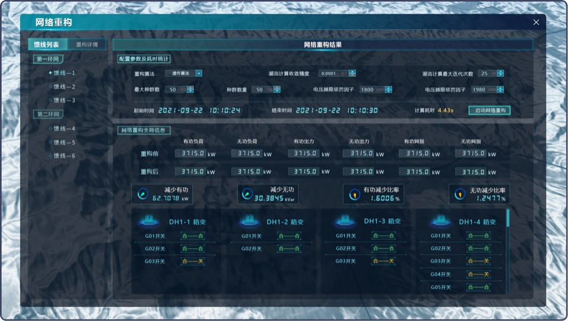

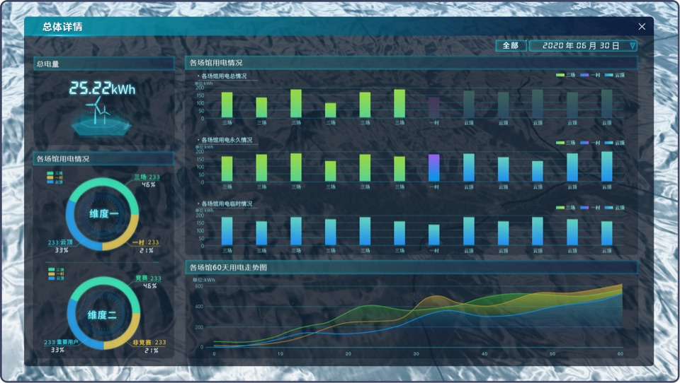

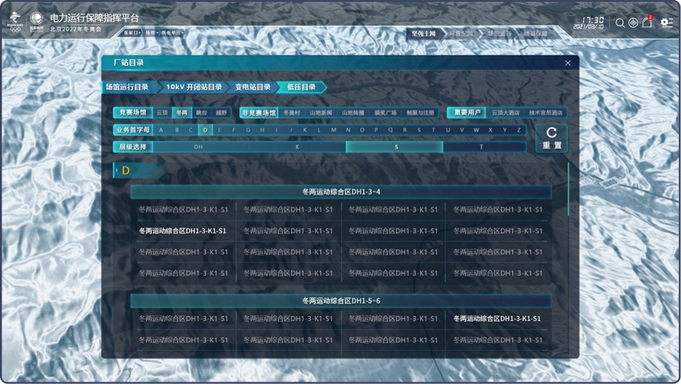
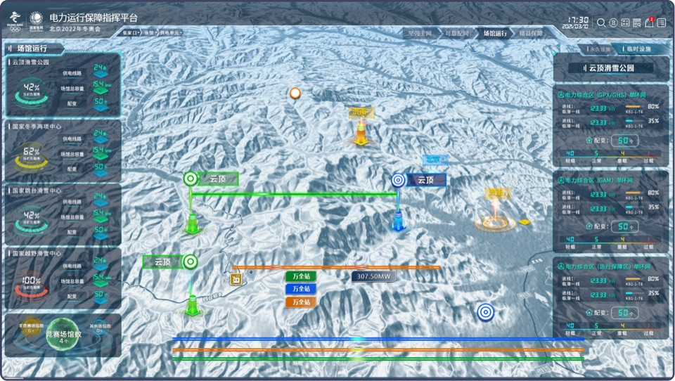


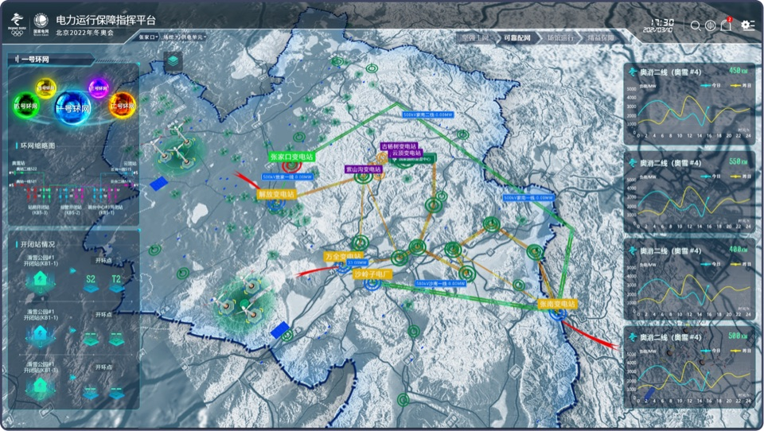
指挥中心现场与实际使用环境
现场照片呈现了界面的实际部署环境，包括屏幕尺寸、观看距离、指挥空间与多方协作场景。
- 设计输出
- 大屏与多页面监控界面
- 使用环境
- 指挥中心与现场保障
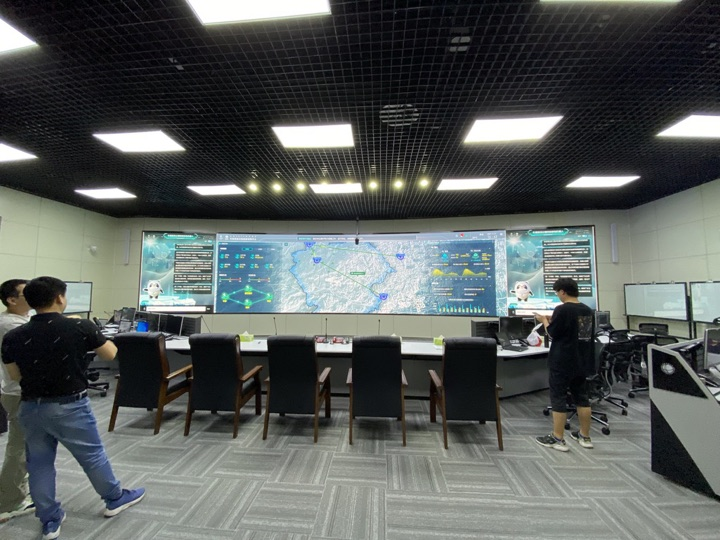
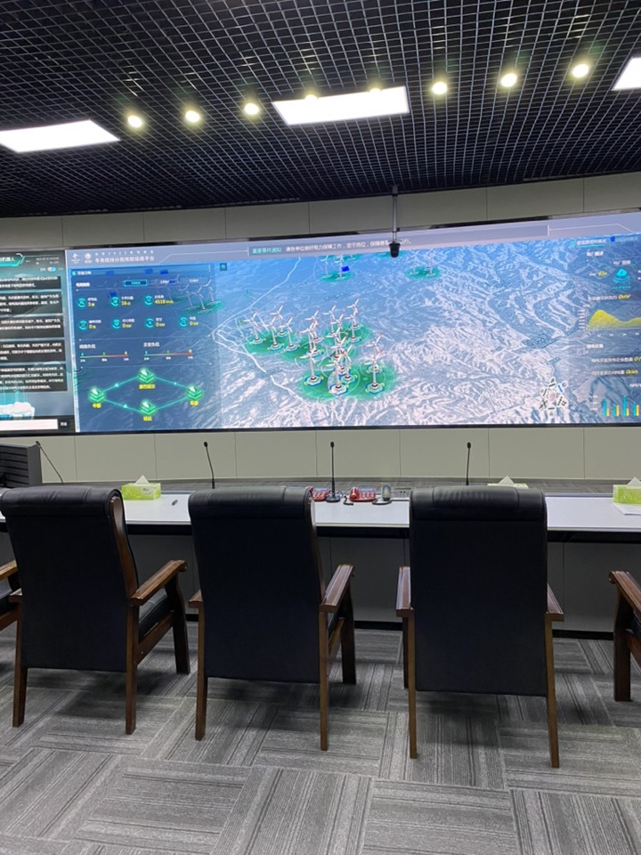

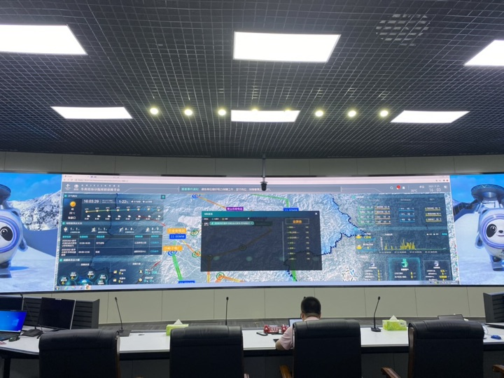

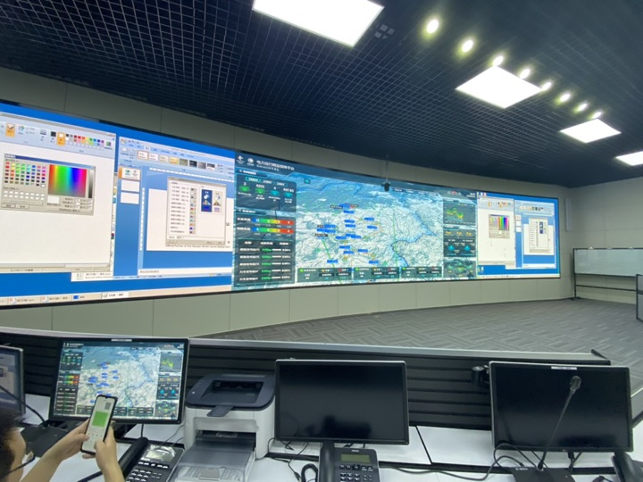
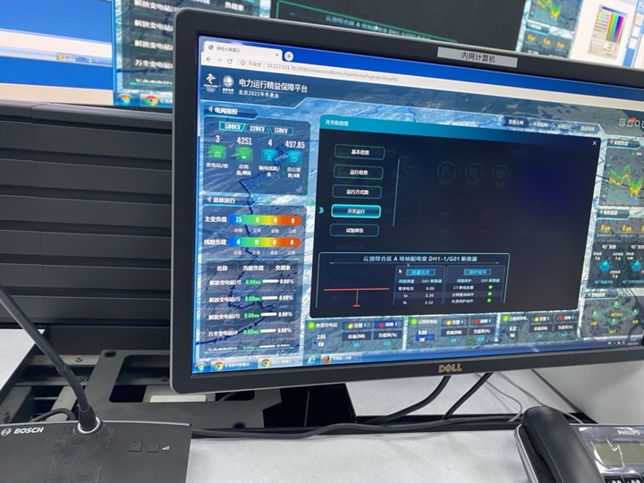

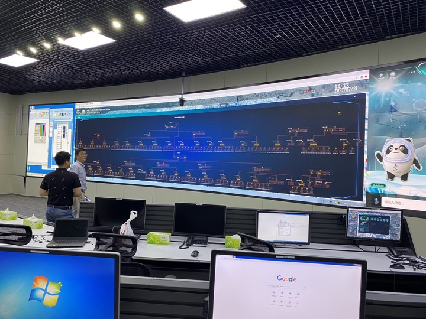
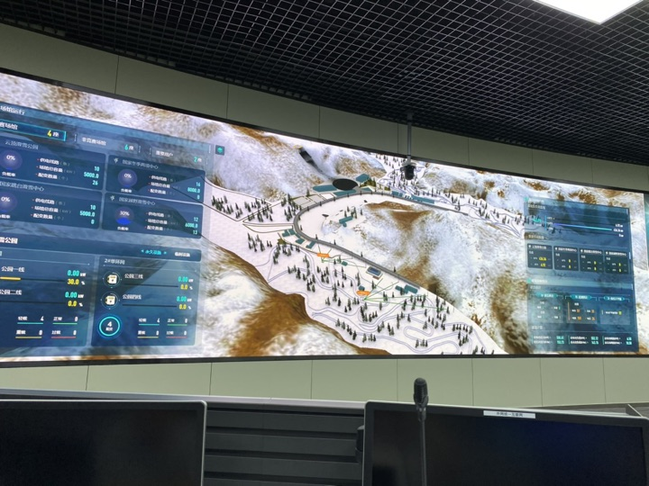

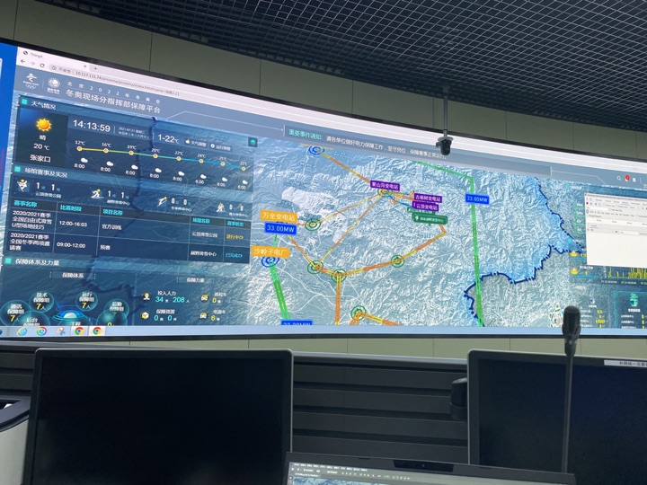